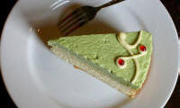
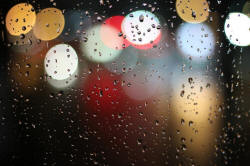
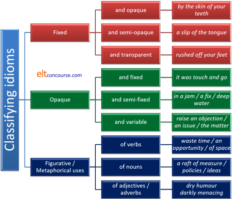
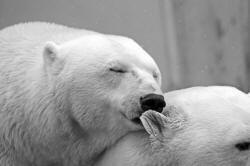

Idiomaticity
Idiomaticity is variously defined and described. The
following attempts to single out the two main features of what
constitutes and idiom in a language and then to investigate how
variable the features are.
You can work through the guide from here or go to a
part which interests you from this menu.
What springs to mind when you see these images? Click here when you have thought of 6 expressions.
 |
 | |
- bite the bullet (suffer an unpleasant and unavoidable situation)
- I'm all ears (I'm listening carefully and am interested)
- a piece of cake (an easy and enjoyable task)
- burn the candle at both ends (work late into the night and begin again in the early morning, thus exhausting oneself)
- let the cat out of the bag (reveal a secret)
- pull someone's leg (play a joke on someone by telling a lie)
There are two important characteristics of the expressions
in black. What are they?
Click here when you have an answer.
- non-compositionality
- This simply means that you can't get the meaning of the
expression even if you know all the words in it. There is no
way (without clear context) to guess, e.g., what
let the cat out of the bag
means.
Another way of saying this is that idioms are often opaque in meaning on the scale of fully transparent to completely indecipherable. More follows on the relative opaqueness of idiomatic language.
This is not to say, of course, that the expressions have no literal meaning. It is possible, quite literally, to let a cat out of a bag but an English speaker would know immediately from the co-text and context whether an expression is being used idiomatically or literally at any time. - fixedness
- All the examples of idioms above are fixed: you can't replace
any of the words (except someone in the last case with a
name or pronoun), you can't leave out any of the words and you
can't insert words.
You can, naturally, bite a stick, burn a hurricane lamp, let the donkey out of the stable, release the cat from the bag, bite the 6mm bullet and pull someone's ear but none of the expressions will have the same meanings as these examples.
Fixedness is a relative term, as is opacity. Read on for a discussion of what you can and cannot alter in idioms.
For a little more on semantics and noncompositionality, consult the guide to semantics linked in the list of related guides at the end.
So, idioms are non-compositional, fixed expressions. End of story,
right?
Not quite, no.
 |
Definitions |
An early definition of an idiom comes from the linguist and teacher Henry Sweet (a major influence in the Reform Movement's reaction to grammar-translation approaches, incidentally). He stated:
The meaning of each idiom is an isolated
fact which cannot be inferred from the meaning of the words of which the
idiom is made up.
(Sweet, 1889:139)
Since Sweet's time, the area has been continually revisited by researchers interested in finding out what constitutes idiomaticity in languages and how the various types of idiom can be classified and analysed. What we have ended up with is a confusing muddle of terms, definitions and classifications which is, to say the least, unhelpful. You may, for example, come across any or all of the following terms if you research this area:
| figurative idioms or non-compositional metaphors | to refer to fact that we can often find a connection between figurative, idiomatic and literal meaning. It is for example, just possible to figure out what bite the bullet might mean with some knowledge of pre-anaesthetic surgery. Ditto, perhaps, with have an ace up one's sleeve |
| binomials | to refer to expressions such as time and again, Ladies and Gentlemen which occur as pairs of words, often with a fixed ordering |
| fixed expressions | to refer to idioms which are truly fixed such as an open and shut case |
| semi-fixed expressions | to refer to idioms where some flexibility is allowed. For example, you can throw in the towel but also throw in the sponge, both meaning surrender, and both derived from boxing |
| lexicalised expressions | to indicate that the expression functions as a single lexeme. For example, kick the bucket actually just functions as the verb die |
| opaque expressions | emphasising the fact that is often not possible to work out metaphoric meaning from literal meaning as it is with figurative metaphors. For example, chew the fat |
| frozen collocations | emphasising the fixedness characteristic of some idioms such as a can of worms |
| restricted collocations | referring to those which allow some flexibility but only within a limited range. For example, you can be a big/large/huge fish in a small/little/tiny pond |
| semi-idioms | to refer to anything which seems like an idiom, insofar as it acts like a single word, but is not completely opaque and fixed. One part of the expression has a figurative meaning not found elsewhere but the other part is 'normal' as in expressions such as pay attention or foot the bill |
It is not the suggestion here that such refinements are useless or
deliberately confusing but we are interested in classifications which
will be useful to us as English-language teachers rather than research
linguists so this guide will focus on two the central characteristics of
idiomatic language: fixedness and opacity
(or non-compositionality, if you prefer).
This will be at the expense of some precision so if you are looking for
more, there are references at the end to on-line, more scholarly
articles that you may want to read.
In some analyses, the definition of an idiom includes both fixedness
(the inability to change any of the components) and opacity
(non-compositionality) but both these phenomena exist on a scale from
fully fixed and opaque through semi-fixed and opaque to variable and
easily understood. The definition soon breaks down.
|  |
Idiom, collocation, lexical chunks and, phrasal verbs: a blurred area |
There are three areas in which the distinction between idioms in the
true sense and other word combinations is not distinct.
In some analyses, the definition of idiom is so broad as to
encompass most of the language. For the sake of sanity, the
following are not considered here as representing true idioms.
They have their own guides on this site which you will find linked
in the list of related guides at the end.
 |
Collocations |
In the list above, we have something called semi-idioms and the
examples are pay attention
and foot the bill in which
only one part of the expression is used figuratively.
There is a range of verbs which act in this way, collocating with
nouns in predictable and fixed patterns. For example:
find fault
lose confidence
make arrangements
pay a compliment
take notice
win respect
make an excuse
do justice
lend a hand
gain admiration
and, although the verbs will collocate with a range of
other nouns, in these meanings there is usually only one possible
choice. We cannot, for example have:
*say excuses
*do arrangements
*borrow a hand
*discover fault
etc.
Some of the combinations do allow a certain flexibility so it is
possible to have:
win admiration
gain, achieve or earn respect
These items are semi-idioms insofar as only one feature of the
definition of an idiom applies. The verb in such expressions
is often described as delexicalised although in some the verb's
usual meaning plays a minor role.
Because the nouns are usually transparent in meaning, they are not
particularly opaque and the meaning can be derived from
understanding their components. In that sense they are not
true idioms.
It is also the case that some verbs may be considered only
semi-delexicalised in that their meaning does contribute something
to the overall meaning of the clause in which they appear. For
example, in:
pay a compliment
take an interest
set an example
catch a name
throw a tantrum
there is some sense of the verb's usual meaning in the clause
but it is still very hard to predict which verb will form an
acceptable collocation so the expressions may be considered
idiomatic in that respect.
They are, however, more or less fixed as we saw and in that respect
they are idioms.
It is also the case that delexicalised verbs can function almost
wholly idiomatically. For example:
Take the bucket to the tap
contains a use of take which is wholly transparent and
non-idiomatic. However:
Take a hammer to it
is an idiomatic use of take which is non-transparent
because it means something like:
Hit it with a hammer
And in:
They made him the manager
we have a non-idiomatic use of make but
If he's lived here since the war, that makes
him over 90
is an idiomatic use of make which is akin to:
If he's lived here since the war he must be
over 90
For a list of semi- and fully delexicalised verbs, click
here.
There is also a lesson for B1 / B2-level learners on delexicalised
verbs
here (new tab).
We also encountered what some people call frozen collocations which
are so strong that they act as single words, always appearing in
combination. The example was a can of worms but many
partitives are restricted in their collocations and we also find,
e.g.:
a rasher of bacon
a pane of glass
a gust of wind
and so on which can only occur in the context of the commodity or
substance they describe. For more, see the guide to
classifiers and partitives, linked below.
Other very strong collocations which are produced and understood as
single concepts and not constructed from their component parts
include, for example:
vested interests
rock solid
special pleading
heart rending
and so on.
Whether such expressions are considered idioms (because they are
clearly idiomatic) or just very strong collocations is a matter of
taste and authorities differ.
When the collocation is noun + noun, some will shade into compound
nouns so, for example:
light bulb
tree surgeon
garden rake
baby sitter
are all analysable as compound nouns and may even be written as one
word.
In that sense they are not idioms because it is a simple matter,
usually, to add meaning one to meaning two and arrive at the meaning
of the whole expression.
The upshot of all this is that there is probably no way in principle that one can draw a line between a reasonably strong collocation and an idiom although it an easier task to identify one or the other.
 |
Lexical chunks |
We owe the term lexical chunk to Lewis (1993) and his investigation of a lexical approach to teaching. He suggests that there is a range of more or less fixed chunks in the language including:
- polywords, e.g.:
inside out
back to front
in that case
if only - institutionalised utterances, e.g.:
Sorry to have kept you
Take my word for it
Would you like ...
I'll see
And that's that - sentence frames, e.g.:
That's not as ... as you think
In what follows ...
The upshot was ...
And quite predictably ...
Lewis also focuses on the fact that some verbs, as we saw above,
take their meaning from the noun with which they form a strong
collocation. This is what he calls delexicalisation and it
mostly affects:
do | have | get | go | make | put | set |
take
although we can add other marginal cases such as earn, pay, run
and save.
All such multiple-word units (or MWUs in the trade) certainly
exhibit some fixedness and are probably produced and understood as
single items but they are not opaque in meaning. They are
idioms in the first sense but not in the second.
You may, incidentally, also find such chunks described as
holophrases, prefabricated routines or formulas.
 |
Phrasal verbs |
One definition of a phrasal verb is that the adverb particle
combines with the verb to produce a meaning which cannot be
retrieved from understanding the sense of the adverb and the sense
of the verb: a third meaning needs to be discovered.
Clearly, for example:
sit back
sit down
sit up
sit in
sit out
are all verbs post-modified by an adverb but the meaning is
extractable by understanding both parts so they are not phrasal
verbs or idioms. Changing the adverb has no effect on the
meaning of the verb at all.
However,
sit by (fail to take action)
sit on (suppress)
sit around (be idle)
sit up (take notice)
are not easily understood by understanding their elements so count
as idiomatic because they are both fixed (in the senses used) and
opaque. In this case, changing the particle will affect the
meaning of the verb because it is the combination which supplies the
third meaning.
Again, of course, there are degrees of opacity, but not of
fixedness, because it is possible to understand the meaning of many
by a small leap of imagination from the usual meaning of the
prepositional use of the particles. For example, once one has
grasped that one of the meanings of out is clear
or loud then combinations such as:
speak out
shout out
make out
and more are quite easily understood as are:
get on
go on
move on
walk on
once we understand that one of the meanings of on is
make progress.
Opacity is consequently low.
Phrasal verbs have their own section on this site (as part of the
consideration of multi-word verbs in general) so will not feature in
this guide to idiomaticity. See the link at the end for more.
 |
Origins |
Although this distinction is not necessary for teaching purposes, it is sometimes helpful in terms of memorisation to know the origin of the idiom one encounters. There are two possible sources (which often overlap):
- Fixed metaphor

Frequently, very influential texts in English, such as the bible, Shakespeare's works and others, contain metaphors which have come into everyday use and become fixed idioms. Some metaphorical uses are obscure in origin. Examples include:
heart of gold
laughing stock
wild goose chase
wear your heart on your sleeve
a foregone conclusion
be cruel to be kind
salad days
cold comfort
a tower of strength
(all from Shakespeare)
at the eleventh hour
by the skin of your teeth
a millstone around your neck
the writing on the wall
(all biblical)
it gives me the creeps
go on the rampage
(both from Charles Dickens)
spill the beans
straight from the horse's mouth
let the cat out of the bag
count your chickens before they are hatched
out to lunch
just my cup of tea
(all obscure in origin but some may conveniently but speculatively be derived from some occupations) - Historical and specific register origins

Other idioms derive from certain registers: sport, the military, trade, sailing and so on and are often opaque without a certain amount of knowledge of the history of the domains. They are usually not completely opaque, however.
Examples include:
a sticky wicket (from cricket)
cover all the bases (baseball)
run with the ball (rugby or American football)
game, set and match (tennis)
a level playing field (many sports)
plant a seed (horticulture)
plough through (farming)
cut a deal (obscure but possibly from card games)
hit a snag (angling or river navigation)
a loose cannon (from naval warfare)
flash in the pan (musketry)
close ranks (army parade term)
half-baked (cookery)
cut and dried (herbalism)
sail close to the wind (sailing)
learn the ropes (sailing)
Proverb origins |
|
| Let sleeping dogs lie |
Many idioms derive from proverbs in English although they are
often truncated because the proverb is well known and does not need
to be said in full for the message to be clear.
Such expressions are almost always very opaque because one needs
access to the whole idiom to understand the meaning. Examples
include:
| Abbreviated idiom | Source proverb | Meaning |
| Don't blame your tools | A bad workman always blames his tools | Poor workers will never blame themselves |
| Well, we have a bird in the hand | A bird in the hand is worth two in the bush | Be satisfied with what you have secured |
| He's the weakest link | A chain is only as strong as its weakest link | One weak element will make the whole thing weak |
| You are clutching at straws | A drowning man will clutch at a straw | When in desperation we will look anywhere for help |
| She won't change her spots | A leopard cannot change its spots | People are reluctant or unable to change their behaviours |
| All's well that ends well | Usually quoted in full | If the result is good, past problems don't matter |
| All that glitters | All that glitters is not gold | Things may appear better and more valuable than they really are |
| He's an empty vessel | An empty vessel makes the most noise | Ignorant people are often the most talkative |
| A stitch in time | A stitch in time saves nine | Repair something before it gets worse |
| He's a bit of a rolling stone | A rolling stone gathers no moss | People who move between places and jobs don't get rich |
| It's in the eye of the beholder | Beauty is in the eye of the beholder | Attractiveness is a personal opinion not reality |
| Beggars can't be choosers | Usually quoted in full | If you get something free, you can't complain about the quality |
| Better late than never | Usually quoted in full | As long as it's what you want, lateness doesn't matter |
| Curiosity killed the cat | Usually quoted in full | Do not pry |
| It's all coming home to roost | Curses, like chickens, come home to roost | The consequences of your actions will come eventually |
| Pearls before swine | Do not cast pearls before swine | Do not give people better than they can appreciate |
| We'll cross that bridge later | Do not cross the bridge till you come to it | Do not waste time worrying about a future that may not happen |
| Don't kill the goose | Don't kill the goose that lays the golden eggs | Don't destroy something that is successful |
| That's the silver lining | Every cloud has a silver lining | Even bad situations have some good in them |
| That's just spilt milk | Do not cry over spilt milk | Don't worry about misfortune which cannot be changed |
| Make hay | Make hay while the sun shines | Take advantage of good conditions while they are here |
| Once bitten | Once bitten, twice shy | People will not repeat actions which were unpleasant |
| The grass is always greener | The grass is greener on the other side of the fence | People always want more than they have |
| We don't want too many cooks | Too many cooks spoil the broth | Having too many people in a team confuses a task |
| When in Rome | When in Rome, do as the Romans do | Adjust your behaviour to suit the culture you are in |
| You can lead a horse to water | You can lead a horse to water but you can't make it drink | You can show people how to do something but you cannot force them to do it |
| That's the last straw | It's the last straw that breaks the camel's back | A small increment can destroy all of something |
| Many hands | Many hands make light work | The more people you have the easier a job will be |
| You're an early bird | It's the early bird which catches the worm | The sooner you start the better will be the prospects |
 |
Fixedness |
This is not an on-off characteristic. Some idioms are more fixed than others, some are very flexible. Here's a cline for you to see what's meant. Where would you put the idioms on right in the cline on the left (if idioms they actually are)? Click on the image for some comments when you have an answer.
|
through thick and thin hammer and sickle aid and abet have a blast hit the sack off one's rocker call it a day assets and liabilities left, right and centre |
life or death back to the drawing board cut corners put all your eggs in one basket torrential rain wouldn't be caught dead miss the boat make the grade make the beds raining cats and dogs |
On the left-hand end of the cline, we can arrange those idioms which are clearly fixed in which we cannot add words, replace words or delete words without changing the meaning entirely. These include:
- hammer and sickle, aid and abet, life or death
- These are fixed-order binomials, sometimes called frozen
binomials. You can't reverse the order without sounding
odd and neither part can be replaced to maintain the meaning.
Nor can you insert anything between the parts. When they
are nouns, such binomials are treated as singular in English (the hammer and sickle
is, thunder and lightning was
etc.).
They belong on the far left. - left, right and centre
- This is similar but is actually called a trinomial (for a
pretty obvious reason). Other examples are:
blood, sweat and tears; cool,
calm, and collected; win, place, or show; tall, dark and
handsome and so on.
True trinomials like these belong on the left of the cline. - call it a day, cut corners, put all your eggs in one basket, wouldn't be caught dead, miss the boat, make the grade, raining cats and dogs, through thick and thin
- These are all fixed idioms. The last of these (through
thick and thin) is often classed as a fixed
binomial. We can't vary the order of words, insert words,
replace words or delete words in these expressions. We
can't have
put all your eggs in one tray
miss the train
rain cats and monkeys
call it a busy day
cut sharp corners
if we want to retain the meaning.
Note, however, that even with fixed idioms, we can alter the tense and must make the pronouns agree (they called / are calling it a day, he missed / will miss the boat, she'll never make the grade etc.) Other structural changes are possible but very rare such as cut a corner but most are forbidden such as *put all your eggs in baskets or *make the grades.
They belong close to the far left of the cline.
On the right we have the most flexible expressions and there are only two of these:
- torrential rain, make the beds
- These are strong collocations because there is a limited
number of possible substitutions with verb + the beds
or torrential + noun. We can, just possibly, have
do the beds and make up the beds and have
torrential waterfalls or torrential rivers but
it's hard to find more replacements. The other way round,
however, produces a wider range of possibilities. The verb
make collocates with an enormous number of nouns (mistakes,
haste, mess etc.) and the number of possible adjectives for
rain is also large (heavy, light, drizzly, hard, thin
etc.). However, some strong collocations are so
predictable as to constitute real idioms. For example,
We pay attention, a compliment and our respects but take an interest, offence, place etc. and give explanations, thanks and promises etc.
It is quite arguable that collocations of this sort do not fully qualify at all as idioms and won't be considered further here. There is a separate guide to collocation on this site, linked below.
The rest of the expressions fall somewhere in the middle of the cline:
- have a blast, hit the sack, off one's rocker, back to the drawing board
- These all have alternates with the same or a very similar
meaning so they are semi-fixed idioms. We can have:
have a hoot
have a whale of a time
hit the hay
off one's trolley
back to square one
which all carry the same sorts of meaning, although they are sometimes stylistically different. Expressions such as these only have a very limited number of alternatives and they belong on the mid-left of the cline. They share other characteristics with true fixed expressions in not allowing deletions or insertions but a severely limited range of alternate words is possible. - assets and liabilities
- This is rather an unusual case because it is a binomial but the
ordering is not fixed (although this is the preferred one).
Other examples of binomials which do not have fully fixed ordering
include:
salt and pepper
see and hear
friends and family
etc.
There is usually a preferred order with all binomials but the reasons for it are complex. See Benor and Levy (no date) for a technical discussion.
There is an interesting exception to fixedness.
Some idioms and even binomials which are normally considered wholly
fixed can be modified with intensifiers. It is possible,
therefore, to have:
I have been rushing hither and
bloody yon all
day
I smell an
extremely large rat
I've missed the
damn/an important boat
have a
total/absolute/complete blast
etc. In particular, the so-called taboo words, bloody,
bleeding, damn etc., are used in this way.
 |
Flexibility |
Idioms may be flexible to a certain extent, then, but the flexibility is also analysable by type.
- Conjugation
Idioms which contain verbs are frequently conjugated to conform to the normal rules so, e.g.:
pass the buck
may be
passes, passed, is passing the buck
and so on and the verb can be nominalised as in:
I resent your passing the buck
Pronouns will change in the normal way and may be accompanied by other changes, e.g.:
She bit off more than she could chew
He has bitten off more than anyone could chew - Passivisation
Such idioms can also be made passive so we can allow
They have cooked the books
and
The books have been cooked - Insertion of words (usually adjectives or adverbs)
right at the eleventh hour
teaching new tricks to a very old dog
by the absolute skin of my teeth - Re-formulation
We need a level playing field → We need to level the playing field
She has a heart of gold Her heart is of pure gold
 |
Constraints |
Some idioms are constrained structurally. For example:
- Some can only be used in the negative so we allow:
I didn't sleep a wink
I can't make head (n)or tail of it
She wouldn't be caught dead with him
but not:
I slept a wink
I made head or tail of it
She would be caught dead with him - Some can only appear in the passive or active voice so we
allow:
He's fed up with the work
I am snowed under with emails
Don't beat about the bush
Let's call it a day
but not:
*The work fed him up
*The emails snowed me under
*The bush was beaten about
*It was called a day
However, reformulation is often allowed so we see and hear:
He missed the boat
The boat was missed
I gave him the benefit of the doubt
He was given the benefit of the doubt
The benefit of the doubt was given to him
She was let off the hook
They let her off the hook
and so on.
This is a wholly unpredictable area.
 |
Opacity or non-compositionality |
Again, there's a cline because there are levels of opacity and
transparency. The image below separates them into those whose
meaning is obvious (literal), those where it can be deduced
(figurative uses) and those which are wholly opaque (often metaphorical).
As you did above, locate these expressions on the right somewhere on the
cline on the left and then click the image for a commentary.
 |
barking up the wrong tree a bitter pill to swallow by the skin of one's teeth bread and circuses kiss and tell heads or tails spick and span holding all the aces at a snails pace |
a dime a dozen bite off more than one can chew cut the mustard bob and weave under the weather hot and bothered research and development come rain or shine Tom, Dick and Harry |
Very few of these idioms are going to be on the
far left of the cline. If they were, they would hardly qualify as
idioms at all.
So, we have the first group of idioms whose meaning can be worked out
quite easily from their literal interpretation or whose meaning
is literal, in fact.
- heads or tails, a dime a dozen, research and development, at a snail's pace
- These are the most literal. It is easy to work out what
they mean from understanding their constituents. Many bi- and
tri-nomials fall into this category:
knife and fork
law and order
salt and pepper
sick and tired
red, white and blue
sex, drugs, and rock 'n' roll
etc. Many do not have transparent meanings, however, such as
I'm all fingers and thumbs
It's neither fish nor fowl
Most idioms do not fall into this category.
The figurative section is the most crowded and it's a matter of opinion whether an expression falls to the left or right of the centre of the cline.
- barking up the wrong tree, a bitter pill to swallow, kiss and tell, holding all the aces, bite off more than one can chew, hot and bothered, come rain or shine
- In many of these sorts of expressions, only one of the items is
used figuratively so it's possible to work out what's meant.
In others, it is a short step from the literal to the figurative
meaning. For example, imagining a picture of a dog barking up
the wrong tree immediately allows you to make the jump to the
figurative meaning of barking up the
wrong tree.
Equally, if you know something about many card games, you'll know that holding all the aces is likely to lead to a win. Even kiss and tell needs little context for you to understand its meaning.
With binomials and some other idioms, it's possible to assume that the terms are synonyms or antonyms of sorts and understanding one allows you to understand the whole. hot and bothered and come rain or shine fall into this category.
Finally, there are the wholly opaque idioms:
- by the skin of one's teeth, spick and span, cut the mustard, bob and weave, under the weather, Tom, Dick and Harry
- All these are opaque and you'd have to be very lucky to guess
their meaning even with context to help. Many idioms are like
these and they have to be learned as single units of meaning.
There are also a number of common binomials in which one or both items is only seen in that context. The example here is spick and span but others include:
to and fro
harum-scarum
helter-skelter
hem and haw
nip and tuck
etc.
 |
Duplex expressions |
Most strong collocations are perfectly easily understood by
understanding the individual lexemes.
For example, there is no difficulty at all in understanding
counterfeit money
bank account
garden party
make a choice
deeply regret
wholly unacceptable
and thousands more by understanding the words in them, even when, as
in the fourth case, the verb carries little real meaning.
There are, however, some collocations which may be literal in
meaning in one sense and used figuratively in another. For
example:
a fine-tooth comb
may be reference to a particular type of comb which has small
gaps between the teeth. However, when we say:
They went through the accounts with a
fine-tooth comb
we are referring to very careful examination and not to a comb
at all. Equally,
a slippery slope
may simply refer to an ice-like surface on an incline but in
something like:
She's on a slippery slope to being dismissed
we are referring to the fact that small actions or omissions
can result in large, negative consequences.
Furthermore, some idiomatic expressions which look like simple
collocations are, in fact, only used figuratively so, for example:
He's a big noise in the army
refers to someone who is important and influential but the
words big and noise do not elsewhere form a
natural collocation (the preferred adjectives being, loud, huge,
deafening etc.).
Macis and Schmitt (2017) estimate that a quarter of strong
collocations have figurative (i.e., idiomatic) meanings and are,
therefore, more sensibly dealt with in the classroom as idioms which
should be learned and produced as single lexical chunks.
Looking out for collocations which are, in fact, being used
figuratively and idiomatically may pay dividends in terms of
teaching and remembering lexis.
Classifying idiomatic language |
We can use the concepts of opacity and fixedness to try our hand
at classifying the range of idioms in English. Such a
classification ignores form for the most part and that we shall deal
with shortly but it does give us a way of making sense of large
amounts of data. It also, unfortunately, means that categories
have blurred edges but that is what always happens when we try to
draw lines on a continuum. This will also give us the
opportunity to add a few more examples of the kinds of idioms we
have discussed so far.
For teaching purposes, the following categories have some utility
because it allows us to focus our learners on idiomatic language
which shares definable characteristics rather than just showering
them with random examples of idioms. Later, we will suggest
other ways that idioms can be classified for teaching purposes which
rely more heavily on meaning and conceptual hooks for their effect.
It is also possible to add to the categories we will use here by
inventing new intermediate ones to extend the possibilities but blurred edges
will always be with us.
Whether you choose to use fixedness or opacity as the measuring
stick for these categories is entirely up to you. Either
approach will make sense in the classroom. The first
categories in the first two sections of what follows are the same.
 |
Fixed idioms |
Fixedness does not always refer to an absolute quality because
function words (particularly determiners) and tense forms may be
altered to suit the context. So, for example, we can have:
keep an / your / my / his eye on
in which the lexical items (keep, eye) cannot be altered
and even the preposition is fixed. The determiner can vary
however and so can the tense. It is, therefore, rare for any of the
lexical constituents to be changed (and even number and mood are
frequently fixed). For example:
bells and whistles
is always plural
storm in a teacup
is always singular and the determiner is also fixed.
make head or tail of
is always negative.
- Fixed and opaque
These idioms usually constitute single lexemes and are learnable as language chunks.
These types are also characterised by having a high level of non-compositionality. Even with context and co-text, it is often impossible to work out the meaning despite knowing all the words which make up the expression.
Examples are:
a can of worms (a complex and difficult situation or set of things)
the black sheep of the family (a family member who is considered to deviate from the norm)
up the garden path (a misleading direction) - Fixed and semi-opaque
While maintaining a high level of fixedness, these idioms may be accessible to comprehension providing one is alert to metaphorical and figurative uses of lexemes. Context and co-text will often help.
Examples are:
as different as chalk and cheese (completely different)
neither here nor there (irrelevant)
making a mountain out of a molehill (exaggerating an issue)
bend over backwards (go to great lengths to be helpful) - Fixed and transparent
Here we verge on strong collocation rather than idiomaticity per se. These expressions are fixed but if you know the meaning of the elements within them, the meaning can be easily surmised so they are virtually transparent.
Examples are:
set in stone (a fixed rule)
love at first sight (instant adoration)
a bull in a china shop (being careless of the damage one's actions may cause)
 |
Opaque idioms |
- Opaque and fixed
This is essentially the same category as 1. above because we are identifying the extreme ends of the clines. As above, these expressions usually operate as single lexemes and can be learned and used as prefabricated chunks.
feeling under the weather (ill)
the back of beyond (remote and isolated)
pass the buck (transfer responsibility or guilt to another) - Opaque and semi-fixed
These are opaque but some variation is possible. They are, however, not accessible for meaning without a great deal of guesswork and use of co-text and context. Even then, comprehension is not assured.
throw in the towel / sponge (resign or surrender)
take the mickey / piss / a rise (ridicule)
have a bash / go / stab / shot (try) - Opaque and variable
Here again, we wander into the realm of simple collocation or delexicalisation. The opacity stems from the fact that the verb is empty of any obvious meaning so it can only be processed by understanding the noun and even then may remain opaque.
make a promise / a friend / a difference
pay a visit / a complement / one's respects
catch a cold / sight of / fire / a train
lose heart / confidence / the plot / the thread
 |
Metaphorical or figurative uses |
- Verbs
This differs from delexicalised use of verbs insofar as the verb retains its meaning but it has been extended to the point at which the meaning is no longer transparent although some imagination may help to unpack the significance.
Examples are:
spend time
close a deal
pencil someone in
crash a party
fall asleep
bear a hand
drop a hint - Nouns
These are often nouns being used outside the field in which they normally operate.
a team player
a point of view
a short head
a hair's breadth
a bird's eye view
a rat's nest
the end of one's tether - Adjectives and adverbs
Colour adjectives are frequently used figuratively and cultural influences come into play. Other adjectives and adverbs referring to perceptions are also often used figuratively. Most are sometimes considered very strong collocations but, because of the metaphorical use, we prefer to classify them as idioms. They are not duplex forms because there is no literal sense.
example are:
a black look
a white lie
a warm welcome
a hot reception
hotly contested
coolly received
bitterly contested
flatly refuse
We can summarise all this like this:

|  |
The relationship between fixedness and opacity |
There is a tendency for these two characteristics to rise and fall together. In other words, the more fixed and inflexible the expression, the more likely it is to be opaque in meaning and vice versa.
We can find low fixedness with some expressions but they are likely
to be quite literal in meaning. For example,
as old as ... can be followed
by a number of expressions (God, the hills, Noah etc.) but
opacity is also low.
Similarly, strong collocations such as
a pronounced accent are not firmly fixed (we can have
strong, broad etc. as the adjective with roughly the same meaning)
but they are usually easy to understand (if not to learn). Such
expressions have low fixedness and also low opacity.
On the other hand, an expression such as off one's rocker has quite high fixedness (there's only one conventional alternative to rocker, trolley) and it is also quite high in opacity. Extreme cases of fixedness are also, often, extreme cases of opacity. Expressions such as let the cat out of the bag are both opaque and fixed as are binomials such as helter-skelter.
There are, nevertheless, instances, especially with binomials, of low
opacity and high fixedness. In other words, they always occur
together and in the same order but are straightforward to understand.
Examples are:
here and there
hand in hand
dead and buried
etc.
The moral?
Whenever we find a highly opaque expression, the way to bet is that it
is also firmly fixed. The reverse is not always true: firmly fixed
expressions are not always opaque..
Here's a graphical representation of that. Before teaching idioms,
it is worth 5 minutes of the planning time to consider where in the
matrix the target language items fall.

One-word idioms |
Idioms are usually understood to be phrases or clauses which
cannot be immediately understood by retrieving the meaning of the
words in them. However, many words, especially verbs, are or
can be used metaphorically and qualify as idioms because they are
(obviously) fixed with synonyms rarely having the same effect and
they are often quite opaque in meaning.
Some examples are:
The show bombed
I was bombarded with questions
The question threw me
They sacked him
You have lost me
It's a pig
My printer died
etc.
None of these examples will mean the same when synonyms or near
synonyms are used so, for example:
The show shelled
I was blasted with questions
The question flung me
They plundered him
You have misplaced me
It's a hog
My printer perished
are all either incomprehensible or extremely unnatural.
 |
 |
Binomials and trinomials |
Because these are so common in English, they merit a short section to
themselves. Many of these items are worth teaching as single
lexemes because they are handy language chunks, they are extremely
common and they are not easily paraphrased.
There are some general characteristics of binomial expressions:
- Form:
They consist of two lexical items belonging to the same word class so they are, noun + noun, verb + verb, adjective + adjective, adverb + adverb. Examples of the four main sorts are:
Noun + Noun:
He has lived here man and boy
Verb + Verb
You can take it or leave it
Adjective + Adjective
And that's the truth, pure and simple
Adverb + Adverb
I will do it sooner or later
(Rarely, the two items are not of the same word class but follow similar structural forms so, for example:
We were home and dry
in which home is an adverb and dry an adjective but both are joined to the subject by the copular verb. That is probably not something with which to trouble your learners.) - Meaning:
Some are literal (apples and oranges etc.), some are figurative (the chicken or the egg etc.) and some are wholly opaque (milk and honey, fiddle-faddle etc.). - Rarity:
Some, such as helter-skelter, super-duper, to and from, hither and yon etc., contain words found nowhere else or retained from archaic forms. - Concord:
When two nouns are joined, the resulting expression is often singular, e.g.:
Fire and brimstone is all he shouts about
Thunder and lightning is on its way
but, if the nouns are already plural, that is not the case:
His eyes and ears are everywhere
The stars and stripes are flying over The White House - Ordering:
The order of the items is usually fixed although with some, reversal has no effect. We can have:
She worked day and night
and
She worked night and day
We allow
I'll do it sooner or later
but not
*I'll do it later or sooner - Inflections:
The tenses, verbs forms, adjective inflexions and numbers of items are normally retained in both constituents so we get, for example:
It's done and dusted
That's bigger and better
It comes with many bells and whistles
I'll name and shame him
There will be some naming and shaming
They were named and shamed
etc. and:
*for all intent and purpose
*It's time to cut and be running
are not encountered. - Coordination:
The items are frequently joined with the coordinator and but there are other possibilities including: but, or, either ... or, neither ... nor, to, after, by, in. - Prosody:
Often the items rhyme or are, more often, alliterative as in, e.g.:
make or break
high and dry
house and home
do or die
etc.
In some, a phenomenon called assonance is discernible so for example, a stressed vowel will be the same in both items or a consonant duplicated with different vowels as in
harum scarum
or
tittle-tattle. - Collocation:
Because binomials operate as single lexemes, they are subject to the same collocational forces as all other lexemes so, for example:
high and dry collocates strongly with the verb leave
high and low collocates with verbs such as look (for), search, hunt and seek
dead and buried collocates with nouns such as ideas, proposals, suggestions, schemes and plans
and so on. - Effect:
Binomials often intensify, especially reduplicative ones, so, e.g.:
She went from strength to strength
They asked again and again
Ones in which the two items are synonyms have the same effect:
He's at my beck and call
The truth is pure and simple
and, perversely, antonym pairs also intensify:
We searched high and low, in and out, in each and every part of the house
The intensification is either echoic (repeating the word) as in the first two examples or a function of synonymy or antonymy as in the other examples.
Here's a selection.
Fuller lists with some doubtful inclusions are available via a web
search.
joined with coordinators (and or or/neither ... nor etc.)
| above and beyond airs and graces alive and kicking all or nothing an arm and a leg apples and oranges assault and battery back and forth ball and chain beck and call beer and skittles bells and whistles for better or worse betwixt and between bits and bobs bow and arrow by and large cat and mouse the chicken or the egg cut and dried cut and run day or night dead and buried dead or alive divide and conquer do or die down and out each and every eyes and ears far and wide guys and girls horse and carriage intents and purposes kill or cure |
kill or be killed knife and fork law and order love nor money lo and behold loud and clear make or break man and boy milk and honey more or less neat and tidy nip and tuck nook and cranny fast and loose fingers and thumbs fire and brimstone first and foremost forever and a day free and clear fight or flight (neither) fish nor fowl fun and games (come) hell or high water (neither) here nor there hit or miss hale and hearty hard and fast hearts and minds here and now high and dry high and low home and dry hope and pray nuts and bolts |
odds and ends pure and simple pepper and salt (hair colour) rags to riches rain or shine research and development room and board sink or swim sooner or later take it or leave it salt and pepper (seasoning) seek and destroy short and / but sweet sick and tired slash and burn smash and grab snakes and ladders stand and deliver supply and demand sweetness and light tables and chairs tar and feather tea and crumpets thunder and lightning time after time to and fro toil and trouble tooth and nail touch and go trial and error up and about vim and vigour wait and see wine and roses |
with reduplication
The term reduplicate is a slight misnomer because the words are
duplicated, not reduplicated.
| again and again all in all around and around arm in arm back to back bit by bit bumper to bumper by and by cheek to cheek closer and closer coast to coast day to/ by day elbow to elbow end to end dog eat dog from ear to ear an eye for an eye |
eye to eye face to face hand in hand head to head heart to heart higher and higher horror of horrors less and less little by little lower and lower man to man more and more mouth to mouth neck and neck never say never nose to nose on and on |
one by one out and out over and over round and round shoulder to shoulder side to side step by step strength to strength through and through time after time (from) time to time two by two toe to toe up and up wall to wall for weeks and weeks woman to woman |
with rhymes or similar sounds
These are often considered a subset of reduplicate phrases but exactly where the border between a reduplicative and these examples lies is not always easy to determine.
Parts of the words are clearly duplicated and the words often rhyme, a
phenomenon encapsulated in the alternative name, ricochet words.
Many of these items contain words unused elsewhere in the English
lexicon and they exhibit both very high noncompositionality as well as
fixedness so they are idioms par excellence.
| belt and braces box and cox chalk and talk chit-chat claptrap dilly-dally ding-dong double trouble even Stevens fender-bender fiddle-faddle flim-flam flip-flop hanky-panky harum-scarum helter-skelter †higgledy-piggledy high and dry |
hire and fire hither and thither hocus-pocus hodge-podge hoity-toity horses for courses hubble-bubble huff and puff hurly-burly hustle and bustle meet and greet mish-mash namby-pamby name and shame near and dear knickknacks nitty-gritty odds and sods |
out and about pell-mell ping-pong pitter-patter razzle-dazzle riff-raff roly-poly shillyshally time and tide tip-top tittle-tattle town and gown use it or lose it wear and tear willy-nilly wine and dine wishy-washy yea or nay |
Hyphenation (see below) is also variable and idiosyncratic with some items so we also see flimflam, shilly-shally, mishmash, chitchat, knick-knacks, dingdong etc.
ordering the items
There are, interestingly
for some, rules for which item is placed first when the
vowel sounds differ and they have to do with what is called ablaut
reduplication. Ablaut describes the alternation in vowels that
we see in, e.g., sing, sang, sung or ring, rang, rung
and so on.
Although there are very rare exceptions, the rule is that the first
item contains a higher vowel than the second. That is to say,
the tongue is higher in the mouth when the vowel in the first item
is produced than in the second.
High vowels in English include: // as in kid, /i/ as in
heel, // as in foot and /u/ as in
shoe.
Low vowels include // as in hat, // as in wash,
// as in cup, // as in taught and // as in
car.
So it is that we get shilly-shally, not shally-shilly,
ping pong, not pong ping, chit-chat not
chat-chit, ding-dong not dong ding,
flim-flam and flip-flop not flam-flim and
flop-flip and so on.
It also explains why most speakers will say this and that
not that and this, knife and fork, not fork
and knife and so on.
This phenomenon is rarer for trinomials in the list below but is
evident in, e.g., cool, calm and collected, eat, drink and be
merry and this, that and the other.
This appears to be non-language specific, incidentally.
patter is a reduction of pat-pat (to hit gently).
blabber is a reduction of blab-blab
paddle is a reduction of pad-pad
and so on.
The technical term for this phenomenon is that the word is a frequentative.
There are fewer of these and they almost always employ and as the coordinator. Examples include:
| beg, borrow or steal blood, sweat and tears cool, calm and collected eat, drink and be merry ear, nose and throat gold, silver and bronze guns, germs and steel healthy, wealthy and wise here, there and everywhere |
hook, line and sinker hop, skip and jump judge, jury and executioner left, right and centre lights, music, action lock, stock and barrel nasty, brutish and short planes, trains and automobiles ready, willing and able |
reading, writing and arithmetic red, white and blue sex, drugs and rock 'n' roll tall, dark and handsome Tom, Dick and / or Harry shake, rattle and roll this, that and the other way, shape or form win, lose or draw |
hyphenation
Many binomials, especially those without a connecting conjunction,
are conventionally hyphenated so we get helter-skelter, willy-nilly,
harum-scarum and so on.
Others are only hyphenated when they are used adjectivally so we get,
for example:
It's a question of law and order
The price is subject to the influence of supply and demand
etc., because these are being used as nouns, but we have:
This is a law-and-order issue
It's a supply-and-demand influence
etc., because these are adjectival uses.
Trinomials exhibit the same phenomenon.
Frozen or fixed similes |
Similes explicitly compare two items, usually, in
English, with the as ... as formulation.
A number of these constitute a kind of idiom although in almost all
cases they are a) fixed and b) often (but not always) quite literal and
transparent in meaning. To extract the meaning, one has usually only to
understand the first item and then understand that the idiom emphasises
its strength.
They include items such as:
| as blind as a bat as black as night as cheap as chips as clean as a whistle as cool as a cucumber as dead as a doornail |
as
deaf as a post as fit as a fiddle as flat as a pancake as free as a bird as fresh as a daisy as good as gold |
as hard as nails as hard as (a) stone as keen as mustard as large as life as light as a feather as mad as a hatter |
as old as the hills as plain as day as poor as a church mouse as quiet as a mouse as regular as clockwork as right as rain |
as safe as houses as sharp as a knife as sick as a dog / cat as strong as an ox as stubborn as a mule as thin as a rake |
etc.
Such expressions, too, are often alliterative.
The main elements are usually given equal stress.
A second form for these fixed expressions employs the like preposition. These are not adjectival so, often, it is a noun being compared to another or a verb being used figuratively as in
| Nouns | Verbs | Modified nouns |
| ears like a bat eyes like a hawk a face like a brick wall a face like a torn balloon a face like thunder a grip like a vice a hand like a bunch of bananas a hand like a claw legs like tree trunks a look like thunder a mouth like a trap skin like a rhino a voice like a foghorn like water off a duck's back |
cry like a baby drink like a fish eat like a bird eat like a horse fight like cat and dog fit like a glove go like lightning go like the wind run like clockwork sell like hot cakes sleep like a baby smoke like a chimney spin like a top stick out like a sore thumb work like a Trojan |
be like a child in a sweet
shop be like chalk and cheese be like a sight for sore eyes be like a dog in a manger be like a fish out of water be like a breath of fresh air be like a bull in a china shop be like a dog with two tails be like two peas in a pod be like a moth to a flame be like the cat that got the cream be like a headless chicken be like watching paint dry be like shooting fish in a barrel |
They are almost totally confined to informal speech and writing. Such clichs are often disparaged in more formal texts.
Similes can also be created in English with the use of neither
the as ... as nor the like formulation.
Here's a short list of what is meant:
crystal clear (=as clear as crystal)
feather light (=as light as a feather)
grass green (=as green as grass)
ice cold (=as cold as ice)
paper thin (=as thin as paper)
razor sharp (=as sharp as a razor)
sky high (=as high as the sky)
stone cold (=as cold as a stone)
etc.
These formulations are rarer.
Such expressions are also sometime abbreviated with -like
as the adjective-forming suffix to signal that we are referring to a
simile so we also encounter:
claw-like hand
ghost-like face
glove-like fit
vice-like grip
but such expressions are unpredictably acceptable and cannot be
formed from the majority of like similes.
 |
Style and register |
Most idiomatic language is stylistically informal and
inappropriate in a number of situations. Idioms are used
extensively in informal speech and writing (especially in
newspapers), however, so a knowledge of common ones is very helpful
for learners of English. Unfortunately, there are, by some
estimates, 25,000 of them in English.
In more formal contexts, idioms will often be avoided so we are
unlikely to find, for example:
Buckingham Palace announced that the Queen is under the weather
The government negotiators are reluctant to open a can of worms,
said the White House spokesman.
etc.
Learners of the language can be tempted to overuse idiomatic
language in situations where it is not appropriate or they can get
the meaning just slightly wrong and produce, e.g.:
*I'll do it willy-nilly
*I'm down in the dumps with her
*The government isn't cutting the mustard for it
In common with many idiomatic expressions, bi- and trinomials are
often informal and common in spoken language.
A few, however, such as first and foremost, more and more,
intents and purposes and others are encountered in formal
writing and some are confined to specific registers such as
economics (supply and demand), the law (aid and abet),
education (reading, writing and arithmetic) or engineering,
politics and commerce (research and development, wear and tear, trial and error, ways and
means).
They are, to some extent, clichs and accordingly much used in
journalese.
The same considerations of grammar and form apply here as they do in
the teaching of any lexis.
It is important to make sure, then, that idiom presentation is set
in an appropriate context (both style and register) and that word class is considered along
with aspects of transitivity, complementation and so on.
 |
Pronunciation |
-
Most binomials are evenly stressed with the coordinating item
being weakened. We get, therefore:
name and shame /nem.n.em/
fun and games /fn.n.emz/
tittle tattle /tt.l.tt.l/
shoulder to shoulder /l.d.t.l.d/
A few may operate like compound nouns and take the stress on the first element, e.g.:
near and dear (/nr.n.d/)
but stressing both components equally is more common. - Trinomials are lists but, because they are processed as
single units, the normal list intonation, with rises after each
item and a fall at the end, is compromised. We may get,
therefore, for example:
game, set and match
pronounced as
/emset.n.mt/
rather than
/em.set.nd.mt/
with the normal pause after the first item and equal stress on all the items.
More commonly, the stress on each item is retained but the intonation does not rise as it would in a list of less connected items:
beg, borrow and steal /be.b.r.n.stil/ - Many idioms operate as single lexemes and only one tone unit
is discernible so we have, e.g.:
I wouldn't be caught dead
/a.wdnt.bi.kt.ded/
with only two stressed syllables.
Compare:
I wouldn't do that if I were you:
/a.wd.d.t.f.a.w.ju/
with four stresses. - Because of their single lexeme nature, idioms are spoken
rapidly as one chunk so syllable reduction and weak forms are
common. E.g.:
She's bitten off more than she can chew
is often pronounced as
/iz.bt.n..m.n.i.kn.tu/
with two syllabic consonants and weak forms (//, /i/). See, too, the pronunciation of and in the binomial examples which is often reduced to a single syllabic consonant (/n/).
 |
Teaching idiomatic language |
Too often, in coursebooks and study guides, idioms and idiomatic language are relegated to peripheral 'Useful phrases' boxes and then ignored. That's a great pity as it is almost impossible to become fluent in English without acquiring a fair number of idiomatic expressions. In fact:
Most students
are very interested in learning idiomatic language. They recognize
it as an area in which they have difficulties, and appreciate systematic
instruction.
(Irujo, 1986: 242)
There's nothing mysterious about this. We have to make the same judgements that we make when teaching lexis of any sort. In other words, we must consider appropriacy and style, range, learnability, frequency and so on. For more, see the guide to teaching lexis, linked below.
 |
Difficulties |
Idioms present some serious difficulties for learners and that is one reason that they have fallen out of fashion of late.
- Idioms date quite rapidly.
It may be the case that native speakers of English used to exclaim
Ye Gods and little fishes!
when astonished by something but to do so now would make the speaker sound very odd and old fashioned.
The popular example of dating is the expression
raining cats and dogs
which almost no native speaker would use but which is often heard from learners of English. Other examples of dated idioms to avoid include:
to be in seventh heaven
to keep up with the Joneses
the gift of the gab
to be dead beat
to take a rise out of someone
and there are many more with which it is unwise to burden learners. - Idioms require learning and reproducing as a string of words
exactly.
Some idioms are quite long strings and impose something of a strain on the memory. For example:
choose the lesser of the two evils
give someone the benefit of the doubt
cross that bridge when you come to it
are all quite long and hard to remember as language chunks. - Fixedness and naturalness.
Getting even one word wrong in an idiom can often result in the expression sounding absurd and unnatural, although it will rarely be misunderstood. For example:
*That's a sour pill to swallow
*I wash my hands from it
*Speak of a devil
*It's not rocket physics
are all wrong by one word and even missing or misusing an article can make the speaker sound foreign or amusing. - Some idioms are stand-alone expressions but some can only be
used embedded in co-text. For example:
Get your act together
Better late than never
So far so good
You can say that again
are all routinely used as isolated phrases (although they can be embedded in other language).
However:
the best of both worlds
miss the boat
beat around the bush
on the ball
in the mire
are only used when they are embedded in other language and cannot stand alone.
Classification and selection for teaching |
One can, of course, teach idioms only as and when they arise in
texts used in the classroom or in response to learner enquiries.
That makes some sense because it avoids problematising the issue and
demystifies a complicated area.
However, especially at more advanced levels, many learners
appreciate that they can only sound truly natural in English if they
are able to use a reasonably wide range of idiomatic expressions.
They will often, therefore, appreciate and be motivated by lessons
which focus specifically on idioms and idiomatic language.
The teacher's problem is how to select, group and present the most
common ones. There are three main ways:
- A shared conceptual category
It has been noted that some words in English feature in idioms more than most and provide a jumping-off point as well as a conceptual hook to help people remember the expressions. For example:colours verbs / nouns body parts animals nature black and blue
black and white
black looks
black market
black out
to be in the black
blue movies
browned off
be green with envy
green politics
give the green light
have green fingers
men in grey suits
in the pink
purple prose
a red-letter day
catch red handed
red blooded
red carpet
see red
red tape
to be in the red
scarlet woman
yellow bellied
bark ... worse than ... bite
big bang
bite off more than you can chew
bite the bullet
bite your tongue
buy the farm
catch / get a name
catch a programme
catch (+ transport)
catch it (be punished)
catch someone (meet)
there's a catch
fall foul of something
go the extra mile
grab a quick bite
kick into the long grass
like it or lump it
make the grade
nuclear option
open your heart
open and shut
pay the piper
raise Cain
run it up the flagpole
run a risk
throw a party
throw a fit
throw a wobbly
throw in the towel / sponge
throw someone (puzzle or confuse)
throw the toys out of the pram
throw your hat in the ringcost an arm and a leg
play by ear
elbow in
keep an eye on
see eye to eye
give your eye teeth for
a finger in many pies
make a fist of
best foot forward
foot the bill
footloose and fancy free
face the music
face to face
lose face
get in someone's face
face up to
put your foot in it
have / get cold feet
find one's feet
a head start
put your head in the sand
let your hair down
head for home
head in the clouds
head over heels
dig your heels in
over my head
be neck and neck
bend the knee
have a knees up
put your nose in
shoulder responsibility
by the skin of your teeth
have a sweet tooth
get your teeth into something
tooth and nail
toe the linebear / bull market
bear with a sore head
beaver away
eager beaver
let the cat out of the bag
headless chicken
chicken livered
cow eyes
a milch cow
crocodile tears
crow about
dog tired
let sleeping dogs lie
do the donkey work
elephant in the room
ferret around
a fish out of water
a cold fish
a fly on the wall
a fly in the ointment
wouldn't hurt a fly
get someones goat
a wild goose chase
hare around
flog a dead horse
back the wrong horse
up with the lark
the lion's share
lounge lizard
pig out
rabbit in the headlights
smell a rat
rat on
snake in the grass
squirrel away
pearls before swine
keep the wolf from the door
a wolf in sheeps clothing
worm your way inblack hole
blizzard of paperwork
a breeze
the cliff edge
an Everest to climb
have a feather in your cap
flood of applications
fog of confusion
forest of legs
gale of laughter
light years away
lightning quick
mists of time
mountain of work
nip something in the bud
ocean of tears
quantum leap
ripple of applause
river of demonstrators
sea of troubles
storm of protest
stream of invective
thunderous footsteps
vale of tears
wave of protest
wet behind the ears
wet blanket - A shared source
We saw above that many idioms derive from professions and activities and this too can be a way of helping the memory. For example:sports and leisure activities warfare commerce and business seafaring the ball is in your court
off his own bat
be blinkered
push the boat out
paddle your own canoe
mark someones card
jump the gun
be for the high jump
jump through hoops
hold your horses
a marathon not a sprint
to give a free rein
to keep on a tight rein
a front runner
be in the saddle
shoot your mouth off
call the shots
skate around the problem
snookered
to spur on
the home stretch
a sticky wicket
down to the wireattack a problem
bombard with questions
have a blitz
damage limitation
dig in
pull up the drawbridge
wave a white flag
the big guns
to steal a march
get your head over the parapet
take no prisoners
rank and file
beat a retreat
scattershot
lay siege to
snipe
go over the top
torpedo an idea
circle the wagons
a war of nerves
a war of words
to be in the warsa blank cheque
the bottom line
break the bank
close a deal
corner the market
do a deal
do the business
get down to business
have a monopoly
insider information
open an account
pay dividends
pay over the odds
return with interest
rig the market
sell short
sign on the dotted line
stakeholders
trade inbe taken aback
batten down the hatches
brass monkeys
a broadside
choppy water
clear the decks
all hands on deck
fly the flag
hull up
hit a rock / reef
keep a lookout
ride out a storm
know / learn the ropes
sail before the wind
set sail
a shot across the bows
show your true colours
smooth sailing
get a head of steam
swing the lead
toe the line
in the wake of - A shared function
Idioms can be classified by the sorts of things they refer to and this is also a useful way of helping the memory. For example:describing personality complementing complaining a pain in the neck
a dark horse
a bright spark
a wet blanket
a rough diamond
the life and soul
a wallflower
a shrinking violetShe's a diamond
You're a trooper
You're a brick
He's a class act
It's worth an Oscar
Take a bow
You've saved my life
You're a starbreathe down someone's neck
Pull your weight
Get off my back
pay through the nose
argue the toss
have a bone to pick
make a mountain out of a molehill
a backseat driver
 |
Lists |
A web search will reveal some very long lists of idioms which you may be tempted to teach to your long-suffering learners. There is nothing wrong with accessing such materials providing:
- you are aware that many lists are collected by people who do not really understand the difference between an idiom, a proverb and a strong collocation.
- you are alert to issues of fixedness and opacity and react accordingly making a principled selection
- you know a little about how learners may be helped to remember items by linking them to conceptual categories or embedding them in a memorable setting or text
With all that in mind, the following is a selected list of around 380 common idioms which attempts to exclude items which are not actually idioms at all, ones which are rare or ones confined to certain registers only. We have also excluded any we didn't know and those which, while classifiable as idioms, are wholly transparent in meaning.
| above and beyond above board accident of birth accident waiting to happen ace in the hole ace up ones sleeve Achilles heel acid test add insult to injury albatross around ones neck alive and kicking all and sundry all bets are off all ears all hands on deck all over bar the shouting all the tea in china all thumbs an axe to grind an early bird an eye for an eye any port in a storm apple of ones eye arm and a leg armed to the teeth as fit as a fiddle as pale as a ghost as poor as a church mouse asleep at the wheel at the drop of a hat at the eleventh hour at the end of ones tether at ones wits end back of beyond back to square one back to the drawing board bad apple bag of tricks ball in your court bang ones head against a brick wall bark up the wrong tree basket case batten down the hatches beat a dead horse beat around the bush bed of roses bee's knees behind the scenes behind the times bells and whistles best thing since sliced bread best of both worlds between a rock and a hard place between the devil and the deep blue sea between two stools beyond the pale bird brain birds-eye view bite off more than you can chew bite the bullet bite the dust bitter pill to swallow black sheep blow hot and cold bolt from the blue bone dry break the ice brush / sweep something under the carpet bump in the road burn the candle at both ends burn the midnight oil bury the hatchet by the skin of ones teeth call a spade a spade call it a day call the shots carrot-and-stick carry the can Catch-22 caught red-handed champ at the bit chase rainbows cherry-pick chew the fat chickens coming home to roost childs play chink in someone's armour chip off the old block claim to fame clear the air close, but no cigar cold shoulder come clean come hell or high water come rain or shine cool as a cucumber couch potato cry over spilt milk cry wolf cut corners cut the mustard dance to someones tune dark horse dead as the dodo dead heat dead ringer devils advocate dig one's heels in dime a dozen dodge a bullet dog in the manger double-edged sword down in the dumps drag ones feet draw a blank drive a hard bargain drive someone up the wall drop a line dry run dyed-in-the-wool eagle-eyed early bird eat humble pie eat your heart out elephant in the room eleventh hour every man and his dog every man for himself face the music fall prey to fat cat father figure feather in ones cap feather ones own nest fed up with fell off the back of a lorry fight fire with fire fight like cat and dog find your feet fish out of water flash in the pan fly in the ointment fly off the handle food for thought Freudian slip from pillar to post |
from scratch full of the joys of spring get a word in edgewise get carried away get off scot free get ones hands dirty get someones goat get the ball rolling get the picture get the sack get to grips with get wind of give someone a piece of your mind give someone a run for their money give someone the cold shoulder give the green light go bananas go berserk go down in flames go off half-cocked go off the deep end go out on a limb go pear-shaped go the extra mile go to the dogs go viral go with the flow grasp at straws grasp the nettle grease the wheels grind ones teeth guilty pleasure guinea pig hair of the dog hands down hanging by a thread have (ones) head in the clouds have a bone to pick with someone have a chip on ones shoulder have a lot on ones plate have a nose for have a whale of a time have an ace up ones sleeve have bigger fish to fry have egg on your face have ones cake and eat it have something in the bag have your say head and shoulders above head over heels head start hear on the grapevine heart and soul hell for leather hit a wall hit the ceiling hit the ground running hit the hay hit the nail on the head hit the road hit the roof hit the sack / hay hit the spot Hobson's choice hold ones peace hot on the heels of hot potato in a heartbeat in a jam in a nutshell in a rut in broad daylight in clover in hot water in one fell swoop in the blink of an eye in the dark in the drivers seat in the limelight / spotlight in the long run in the nick of time in the pipeline in the same boat in the works its not rocket science itchy feet Jack of all trades join the club jump on the bandwagon jump ship jump the gun jump through hoops just what the doctor ordered just the ticket keep a stiff upper lip keep an eye peeled keep it under your hat keep your powder dry kick it into the long grass kick the bucket kick the habit kill two birds with one stone kiss and make up kith and kin know something like the back of ones hand learn / know the ropes leave someone in the lurch let sleeping dogs lie let the cat out of the bag like ... (see similes, above) lions share look a gift horse in the mouth lose the thread low-hanging fruit make a mountain out of a molehill make ends meet make ones mark meeting of the minds miss the boat move heaven and earth much of a muchness music to ones ears neck and neck nip something in the bud no rhyme or reason to nothing to write home about off the hook off your trolley / rocker once in a blue moon paddle ones own canoe pain in the neck par for the course pass the buck pass with flying colours pencil something in penny-pinching pie in the sky piece of cake pipe dream play it by ear pop your clogs pot calling the kettle black peaching to the choir pull someone's leg pull strings pushing up the daisies |
push the envelope put the cart before the horse put the cat among the pigeons put your foot down queer the pitch quick as a flash quick-and-dirty quote unquote race against time rain cats and dogs raise the bar raise the roof rank and file read between the lines read the riot act red herring red tape reinvent the wheel right as rain right under ones nose right-hand man ring a bell rock bottom rock the boat rub something in rubber-stamp rule of thumb run out of steam sacred cow sandwich short of a picnic second wind see eye to eye sell like hotcakes set in stone set the Thames on fire sharp as a tack shoot the breeze shooting fish in a barrel show ones true colours sick and tired of sight for sore eyes silver bullet sink or swim sitting duck sitting pretty six of one, half a dozen of the other sleep like a baby slippery slope small beer smell a rat smoking gun snake oil sore point sour grapes spick and span spill the beans spin a yarn square the circle stab in the dark stab someone in the back stand on ones own two feet stand ones ground steal someones thunder stem the tide step up to the plate storm in a teacup strike a chord sweep under the carpet / rug swim against / with the tide sword of Damocles take a gander take a rain check take it easy take it or leave it take something with a pinch of salt take the biscuit take the bull by the horns take the edge off take the mickey / piss take the wind out of someones sails take with a grain of salt take your medicine taste of your own medicine teach an old dog new tricks tear ones hair out ten / two a penny test the waters that ship has sailed theres no such thing as a free lunch thin on the ground think outside the box / envelope through the grapevine through thick and thin throw a spanner in the works throw caution to the wind throw down the gauntlet throw in the towel / sponge throw out the baby with the bathwater thumb your nose at tight-lipped till the cows come home time is money tip of the iceberg toe the line tongue-in-cheek too many to shake a stick at touch base tread water turn a blind eye to turn the corner turn the tables twist the knife make a U-turn under / below the radar under someone's thumb under the weather until the cows come home until youre blue in the face up for grabs up in the air up to scratch upset the apple cart use ones head vicious circle virgin territory vote with ones feet waiting in the wings walk on eggshells water under the bridge wet behind the ears wet blanket what goes around comes around when the chips are down wild goose chase window dressing window shop witch hunt work ones fingers to the bone writing on the wall year in, year out you can say that again you cant judge a book by its cover young at heart your guess is as good as mine yours truly zero in on something |
If you would like all those lists as a single PDF document, it's available here and from the links at the end.
Clearly, such a list is only useful for planning purposes and as
an aide memoire. Please do not be tempted to give it
to your learners to commit to memory.
One way of approaching the area which has found some success is to
alert the learners that every lesson will include a new idiom from
this list. Their job is to try to identify it when it appears
in the materials or in something you say and point this out to the
class.
In this way, an enjoyable and simple challenge can be set and the
learners are not overloaded with too many idioms they can neither
remember easily nor use naturally.
 |
Techniques and classroom approaches |
Idioms and idiomatic language have some characteristics that make certain approaches more worthwhile and productive than others.
- Context and co-text
Idioms are, as we saw above, not confined to general informal speech but that is the setting in which they are most frequently used.
It makes sense, therefore, to ensure that we set them in a clear informal social context with language used among people well known to each other and without too many disparities in roles and power.
Idioms occur more naturally in informal story-telling language so that's a good place to situate them. Context will also help learners appreciate issues of style and co-text will often disambiguate meaning successfully.
In particular, idioms are frequently used to sum up a situation and, without the preceding text are almost impossible to understand.
An expression such as:
this is a whole new ball game
is superficially opaque but if it comes at the end of a conversation about possibilities and suggestions, it may be easy to grasp the meaning. - Illustrations
Because idioms are so picturesque, it makes it comparatively easy to link them to illustrations (see the introduction to this guide for examples). - Figurative meaning
Group and pair-work to decipher figurative meaning is helpful because people see different things in language and have different mental metaphors so they can help each other significantly. Obviously, the more transparent the meaning is, the less hard the expression will be to understand and learn. - Retelling stories
Retelling exercises can be a powerful way of consolidating idiomatic language as can dialogue writing and creative story writing. - Translation
Idioms rarely translate exactly between languages but it is surprising how similar concepts are encoded in idiomatic language. For example, the expression it cost an arm and a leg is rendered in Spanish with something like it cost an eye of your face and in German, a hook in the matter means there's a fly in the ointment. All languages exhibit a rich and picturesque range of metaphorical meaning. It can be educational, interesting and fun to compare how meanings are encoded in various languages and that, too, can help retention.
Here are some examples for fun. Can you match the English idioms on the left to their equivalents in other languages on the right? Click on the image when you have an answer.
You can, of course, get your learners to make up quizzes like this and challenge others to find the English equivalent or figure out the meaning.
More teaching ideas can be found in Irujo (1986)
In the section for learners on this site, there are some exercises to do with idioms and binomials. Check the exercise index under vocabulary for more.
There is a very short test on some terms to help you recall some of this.
| Related guides | |
| synonymy | for more on how this and related areas work with more on similes and metaphors (fixed and otherwise) |
| semantics | for a theoretical guide to meaning |
| teaching lexis | for some practical ideas |
| PDF list | for all the lists used above of English idioms |
| the lexical approach | for a guide to an approach to analysing and teaching language which focuses on chunks, holophrases, polywords and more |
| collocation | for more on this form lexical relationship |
| classifiers and partitives | for a guide which considers the role of restricted partitives such as pane of and rasher of |
| empty or delexicalised verbs | for a list in PDF format |
| multi-word verbs | for the guide to many idiomatic expressions |
References:
Barkema, H, 1996, Idiomaticity and terminology: a multi-dimensional
descriptive model, Blackwell Publishing Ltd., Studia Linguistica,
Volume 50, Issue 2, pp. 125-160
Benor, SB & Levy, R, no date, The Chicken or the Egg? A
Probabilistic Analysis of English Binomials, available from
http://www.pdfmanuale.com/file/9GW/the-chicken-or-the-egg-a-probabilistic-analysis-of-english.html
[accessed January 2015]
lrujo, S, 1986, A piece of cake: learning and teaching idioms,
English Language Teaching Journal, 40 (3) pp. 236-242, Oxford: Oxford
University Press
Lewis, M, 1993, The Lexical Approach, Hove, England: Language
Teaching Publications
Macis, M and Schmitt, N, 2017, The figurative and polysemous nature
of collocations and their place in ELT, ELT Journal Volume 71/1
pp50-59, Oxford: Oxford University Press
Moreno, REV, no date, Idioms, Transparency and
Pragmatic Inference, available from
http://www.phon.ucl.ac.uk/publications/WPL/05papers/vega_moreno.pdf
[accessed January 2015]
Schmitt, N and McCarthy, M, 1997, Vocabulary: Description,
Acquisition and Pedagogy, Cambridge: Cambridge University Press
Sweet, H, 1889, The practical study of languages, London:
Oxford University Press (Reprinted in 1964)
(A list of, it is claimed, over 1500 English idioms is available from
https://7esl.com/english-idioms/ but be warned, many are not really
idioms and proverbs are included in the lists.)